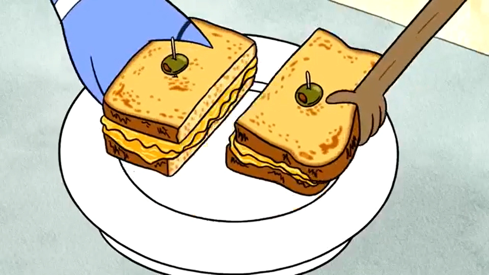

Grilled Cheese Deluxe
Home

Grilled Cheese Deluxe
A classic grilled cheese with a slight addition.
Ingredients
- Two slices of white bread
- Two slices of american cheese
- Butter
- Two green olives and toothpicks for skewer
Steps
- First take your bread and butter one side of each slice
- Place both slices of cheese on top of the unbuttered side
of one of your slices of bread
- Place your other slice of bread on top of the cheese
with the buttered side facing up
- Grill your sandwich on medium heat flipping it once
the bread is toasted
- Finish grilling on the other side until the cheese is
completely melted
- Slice your sandwich in half
- Finally skewer your olives and poke one skewer into each
half of the sandwich
- Enjoy!
Home